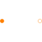
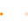

PartialTwoPortTwo magnetic ports for graphical modeling |

|
Information
This information is part of the Modelica Standard Library maintained by the Modelica Association.
This magnetic two port element consists of a positive and a negative magnetic port and considers the flux balance of the two ports. Additionally the magnetic potential difference (of the positive and the negative port) and the magnetic flux (into the positive magnetic port) are defined. This model is mainly to used to extend from in order build more complex - graphical - models.
See also
PositiveMagneticPort, NegativeMagneticPort, PartialTwoPortExtended PartialTwoPortElementary
Connectors (2)
| port_p |
Type: PositiveMagneticPort Description: Positive magnetic port of fundamental wave machines |
|
|---|---|---|
| port_n |
Type: NegativeMagneticPort Description: Negative magnetic port of fundamental wave machines |
Extended by (9)
|  |
Modelica.Magnetic.FundamentalWave.Interfaces Two magnetic ports for textual modeling |
|
Modelica.Magnetic.FundamentalWave.Interfaces Two magnetic ports for graphical modeling with additional variables |
|
|
MagneticPotentialDifferenceSensor Modelica.Magnetic.FundamentalWave.Sensors Sensor to measure magnetic potential difference |
|
|
Modelica.Magnetic.FundamentalWave.Sensors Sensor to measure magnetic flux |
|
|
Modelica.Magnetic.FundamentalWave.Sources Source of time varying magnetic flux |
|
|
Modelica.Magnetic.FundamentalWave.Sources Source of constant magnetic flux |
|
|
SignalMagneticPotentialDifference Modelica.Magnetic.FundamentalWave.Sources Source of magnetic potential difference with signal input |
|
|
ConstantMagneticPotentialDifference Modelica.Magnetic.FundamentalWave.Sources Source with constant magnetic potential difference |
|
|
Modelica.Magnetic.FundamentalWave.Components Short cut branch |